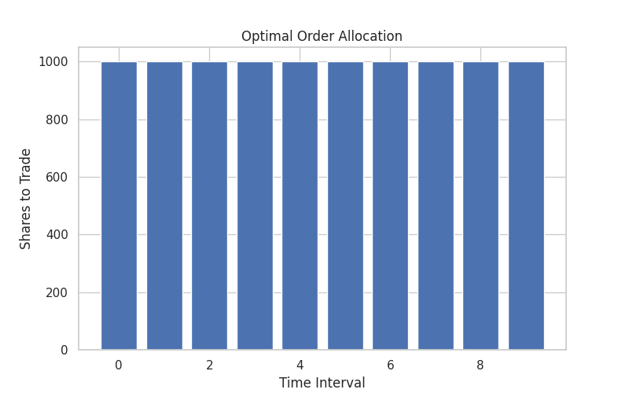

Welcome to the Blockhouse Market Impact & Optimal Allocation Project! This initiative focuses on developing robust models and algorithms to minimize trading costs by effectively managing temporary market impact during order execution.
- Core Objective: Minimize trading impact through advanced modeling and optimization of order execution across diverse stocks and time periods.
- Data Utilized: Real and synthetic order book data for three distinct stocks, analyzed at 1-minute intervals.
- Key Deliverables: An interactive analysis report, high-quality professional plots, and detailed written explanations in PDF format.
Explore the comprehensive results, underlying code, and extensive documentation provided below.
Analysis Reports & Interactive Tools
-
Full Interactive Analysis Report (HTML):
View Detailed Analysis Report Dive into the complete analysis, including methodologies, findings, and interactive visualizations.
Key Visualizations & Plots

CRWV Impact Analysis

FROG Impact Analysis

SOUN Impact Analysis

Optimal Allocation Example
Supplementary Documents
- Modeling the Temporary Impact Function g_t(x) (PDF) A detailed explanation of the proposed non-linear power law model for temporary market impact, including its theoretical underpinnings and estimation methodology.
- Mathematical Framework for Optimal Order Allocation (PDF) Presents the rigorous mathematical formulation and the algorithmic approach for optimizing order allocation to minimize execution costs over time.
- Modeling Temporary Impact and Optimal Order Allocation (Presentation) (PDF) A concise, high-level overview of the entire project, summarizing key findings, methodologies, and conclusions in a presentation format.